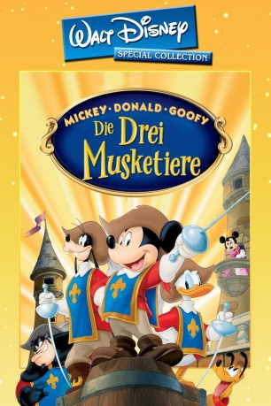

#2791 Micky, Donald, Goofy - Die drei Musketiere
Alternativ: Mickey, Donald, Goofy: The Three Musketeers
 
 IMDB-Wertung: 6.4 / 10
IMDB-Wertung: 6.4 / 10  Metascore: 0
Metascore: 0 
In Disneys Interpretation von Alexander Dumas Geschichte wollen Micky Maus, Donald Duck und Goofy nichts lieber als im Namen ihrer Königin (Minnie Mouse) grosse Taten zu vollbringen, werden aber durch den Chef Musketier Pete daran gehindert. Pete will heimlich die Königin loswerden, weshalb er Micky und seine stümperhaften Freunde als Minnies Wächter ernennt. Die Filmmusik basiert auf bekannten klassischen Melodien.
Jahr: 2004
Dauer: 67 Minuten
FSK:
Land: USA Studio: Walt Disney Home VideoTonspuren: DD5.1 - ,
Untertitel:
Auflösung: 1080p (1920x1080) Größe: 5785 MB
Genre: Komödie, Abenteuer, Animation/Trick, Familie, Liebe
Regisseur: Donovan Cook
Drehbuch: Evan Spiliotopoulos, David Mickey Evans, Alexandre Dumas
Soundtrack: Bruce Broughton
Darsteller:
Datei: X:\Kinder Disney HD\Classic Cartoon\Micky, Donald, Goofy - Die drei Musketiere (2004, FSK, 1920x1080).mkv seit 15.12.2015
Festplatte: Kinder-Filme+Trick
 Es gibt insgesamt 22 Filme in der Gruppe 'Kinder Disney HD\Classic Cartoon'
Es gibt insgesamt 22 Filme in der Gruppe 'Kinder Disney HD\Classic Cartoon'